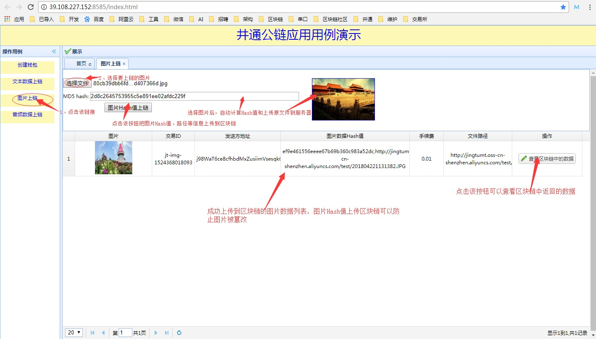

应用数据上井通公链的演示目的
1、展示数据上链的步骤，揭开区块链结合业务应用的神秘面纱。
2、在理解业务数据上链的流程操作后，业务主体相关人员更好地关注业务，寻找业务跟区块链结合的场景。
3、可以缩短业务应用开发人员学习井通区块链接口的时间，该Demo提供源码供参考。
钱包模块
包括创建钱包、激活钱包、查询余额。这是业务应用结合区块链的第一步，所有的交易多要有发送方钱包地址和接收方的钱包地址。钱包激活了才能使用，要激活钱包，必须向此钱包转入25个以上的SWTC，同时消耗0.01个SWTC。查询余额不会消耗SWTC。
文本数据上链
文本上链是区块链应用最常见的场景。从业务系统中提取要上链防篡改的数据，以某种格式和顺序上传到区块链。同时，业务系统保存上链用的ClientID和返回的Hash值，以便可以从区块链中检索数据。
Demo演示了把文本框中输入的数据上传到区块链中，同时保存相关数据到本地业务系统的数据库中。从上传数据的记录列表中可以点击查看区块链中的数据，可以查看上传到区块链中的文本数据和从区块链中返回的JSon字符串。
图片上链
图片上链也是区块链应用常见的场景之一。图片上链最大目的之一也是防篡改，提高信任度。比如产品溯源中的产品生产过程的照片、认证照片等，检验检测行业中的检验检测报告。图片上链可分两种，一种是图片计算Hash上链的同时把图片上传到云服务器，这种方式的好处是可以防止图片篡改又减轻了上传到区块链中的性能和成本的开销。另一种是整张图片上链，以Base64或二进制的方式。
Demo中演示的是第一种图片上链的方式。选择图片文件后，系统自动计算hash值和上传图片原文件到云服务器，把图片Hash值和路径上传到区块链，同时保存相关数据到业务数据库。从上传记录列表中，可以看到图片存储的路径和缩略图。点击查看区块链中的数据，可以查看图片Hash值、路径和从区块链中返回的JSon字符串。可以通过路径获取到图片，再重新计算图片Hash值，跟区块链中存储的Hash值做比较，如果一致，则图片未被改。

音频数据上链
音频上链也是区块链应用常见的场景之一。音频上链最大目的之一也是防篡改，提高信任度。音频上链可分两种，一种是音频计算Hash上链的同时把音频文件上传到云服务器，这种方式的好处是可以防止音频被篡改又减轻了上传到区块链中的性能和成本的开销。另一种是整个音频文件以二进制的方式上链。
Demo中演示的是第一种音频上链的方式。选择音频文件后，系统自动计算hash值和上传音频原文件到云服务器，把音频Hash值和路径上传到区块链，同时保存相关数据到业务数据库。从上传记录列表中，可以看到文件存储的路径和音频播放。点击查看区块链中的数据，可以查看音频的Hash值、路径和从区块链中返回的JSon字符串。可以通过路径获取到音频，再重新计算音频的Hash值，跟区块链中存储的Hash值做比较，如果一致，则音频未被改。